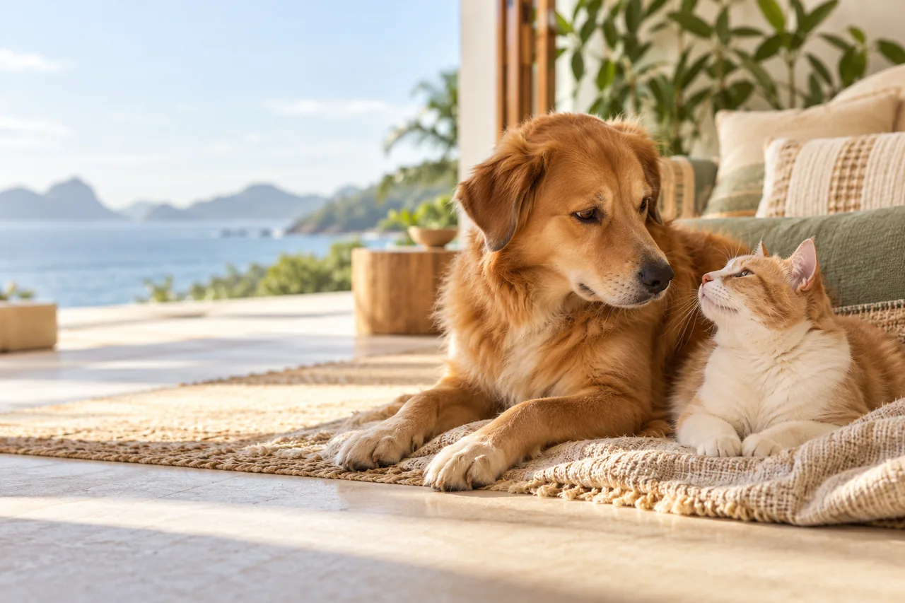
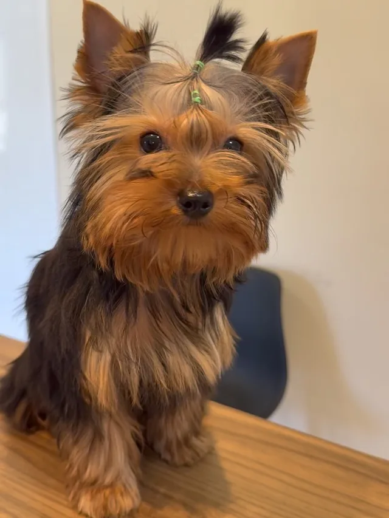
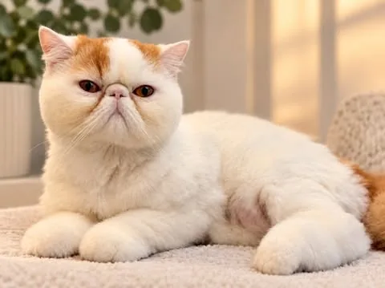
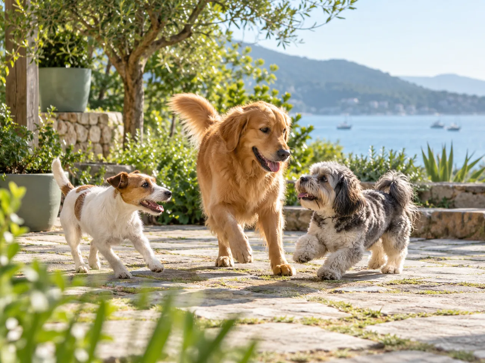
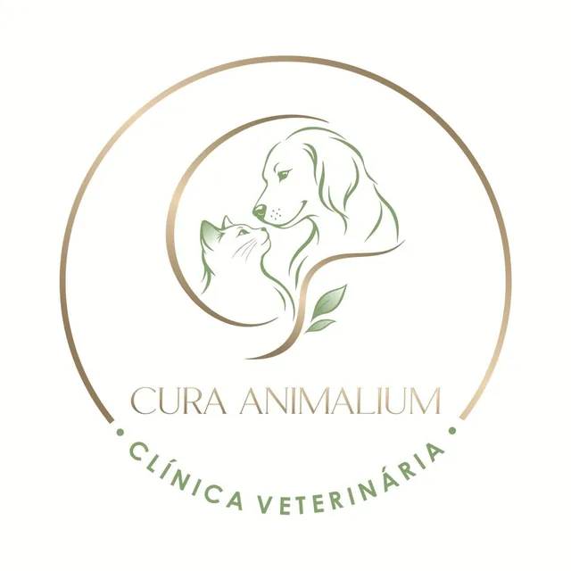
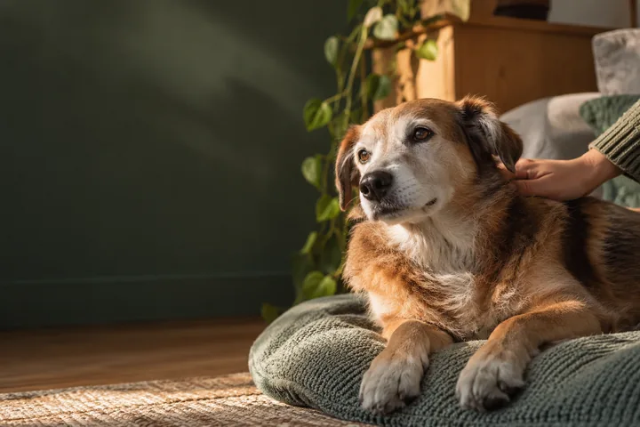

Perequê · Porto Belo, SC
O cuidado que eles merecem.
Veterinária, banho e tosa, creche e hospedagem num só lugar. Conte sobre o seu pet e combine o próximo cuidado com a equipe.



Para eles,
cada gesto conta.
O bem-estar aparece nos detalhes: na atenção de uma consulta, no tempo de brincar, na tranquilidade depois do banho. É assim que a rotina de cuidado ganha significado.
Encontre o cuidado certo
Uma rotina inteira
de cuidado.
Da saúde ao tempo de brincar. Escolha por onde começar e a conversa já chega com o assunto certo.
-

Clínica veterinária
Para conversar sobre saúde, dúvidas e acompanhamento. Conte o que está acontecendo e veja a melhor forma de atendimento.

Cura Animalium · Clínica Veterinária Falar sobre atendimento -
Banho e tosa
Higiene com atenção ao conforto de cada pet. Pergunte sobre horários, necessidades especiais e disponibilidade.
Falar sobre banho e tosa -
Creche
Uma rotina de convivência e atividades para o seu cão. Converse sobre adaptação, horários e como funciona o dia por lá.
Falar sobre a creche -

Hospedagem
Vai viajar? Pergunte sobre estadias, rotina e cuidados para entender se a hospedagem combina com o seu pet.
Falar sobre hospedagem
Cuidado para
cada jeito de ser.
Um cuidado que acolhe a energia de quem quer brincar e a calma de quem precisa de atenção.
Conte sobre o seu pet Imagem ilustrativaVínculos
que ficam.
Fotos enviadas para o projeto, ao lado de cenas ilustrativas de cuidado. Role para girar.

Quem confia,
conta.
Vamos falar
do seu pet?
Escolha o assunto, conte o nome do seu pet se quiser e abra a conversa no WhatsApp. A mensagem fica pronta para você revisar antes de enviar.
No coração
de Perequê.
R. José Alexandre Rocha, PerequêPorto Belo, Santa Catarina · 88210-000
Uma conversa é o melhor começo. Confirme endereço, horários e disponibilidade antes de ir.